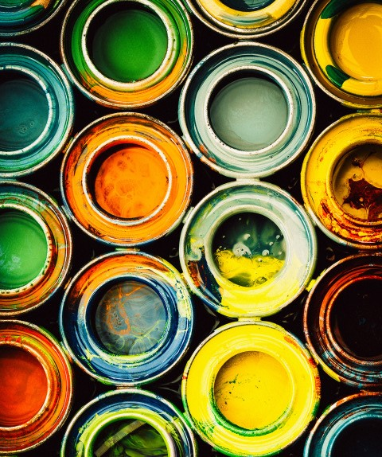

|  | История искусства насчитывает десятки тысяч лет — люди самых древних цивилизаций использовали доступные им методы для изображения значимых для них объектов. С ранних времен и до наших дней появлялось множество художественных течений, каждое из которых имело черты, отражающие политические и социальные особенности того периода, когда они возникали. Выдающиеся произведения изобразительного искусства от эпохи Возрождения до модернизма, несомненно, оставили свой след в истории. Многие современные художники используют исторические отсылки к искусству прошлого в своих произведениях, поэтому для понимания многих картин решающее значение имеет знание исторического контекста и значения каждого периода для истории искусства в целом. Ниже представлена хронология художественных направлений, их характеристики и выдающиеся представители каждого периода в истории западного искусства. Присоединяйся к нам Зарегистрироваться |